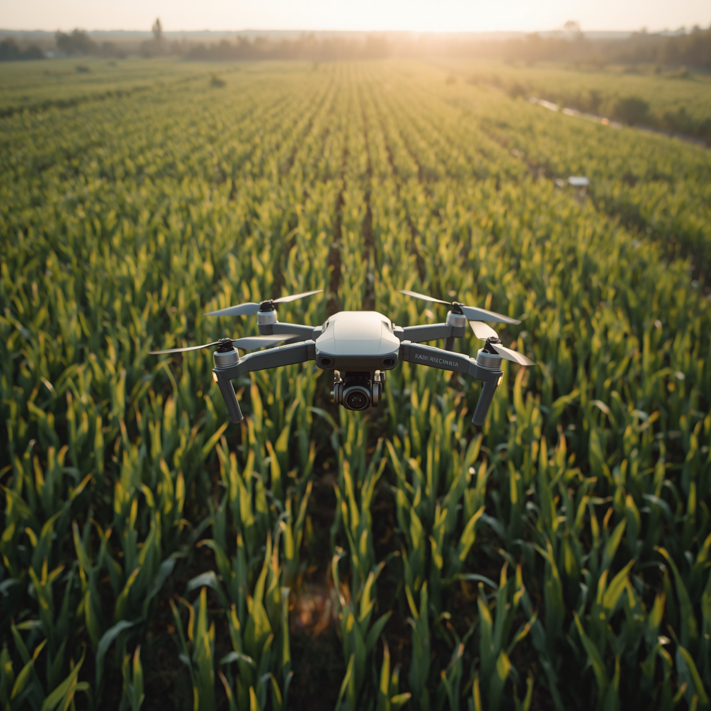

Tecnologia agrícola reforça papel do Brasil
A agricultura sustentável ganha espaço no debate global em um momento de pressão sobre custos, segurança alimentar, energia e mudanças climáticas.

Segundo Luciana Gorab, especialista em Planejamento Estratégico de Vendas, esse cenário coloca o Brasil em posição de destaque por unir produtividade, inovação e capacidade de adaptação no campo. Enquanto temas como inteligência artificial, guerras comerciais e a nova corrida energética dominam parte das discussões internacionais, uma transformação menos ruidosa vem fortalecendo o papel brasileiro na inovação agrícola.
O avanço de tecnologias baseadas no uso de microrganismos nas lavouras mostra como o país pode contribuir para reduzir a dependência de fertilizantes químicos, um dos insumos mais caros e sensíveis da produção de alimentos. O trabalho da microbiologista brasileira Mariangela Hungria ganhou projeção internacional após décadas dedicadas ao desenvolvimento de bactérias capazes de substituir parte dos fertilizantes industriais.
“Num planeta preocupado com segurança alimentar, inflação e mudanças climáticas, talvez uma das soluções mais sofisticadas do século esteja justamente onde o Brasil sempre foi forte: no campo...”


Deixe seu comentário sobre a tecnologia no campo